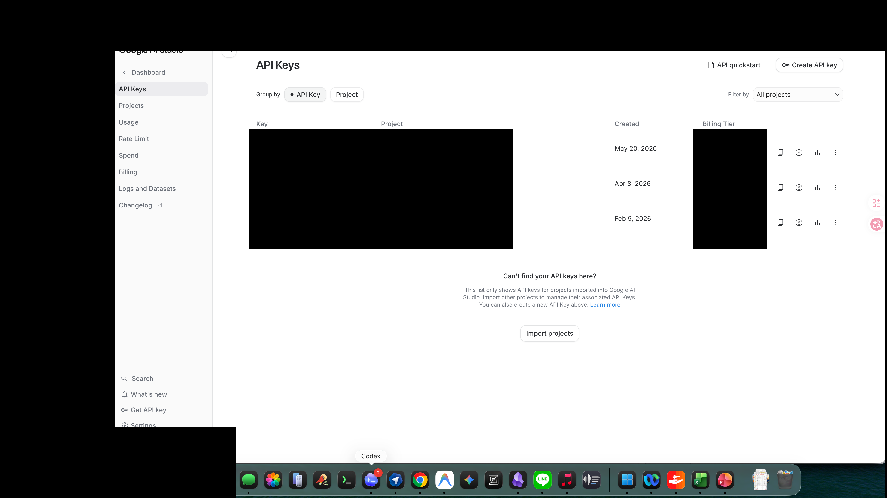
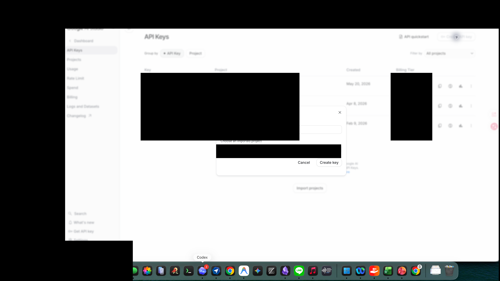
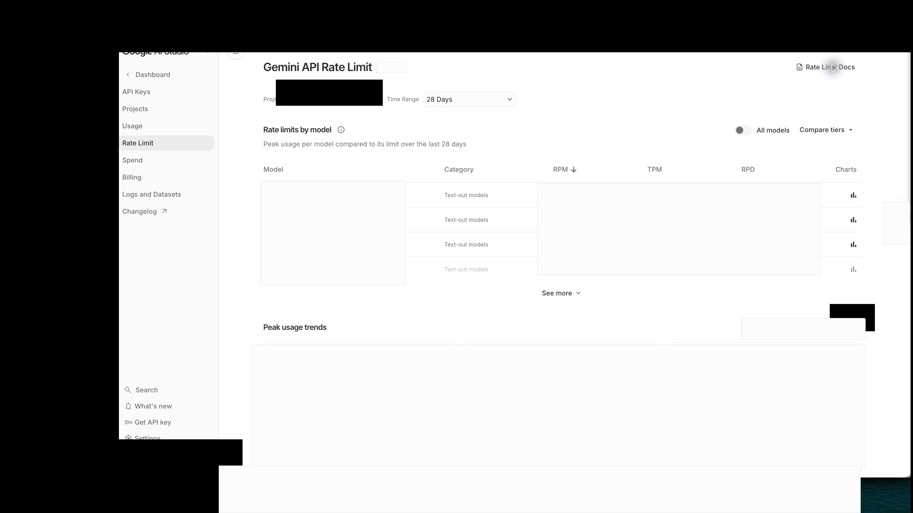

最後更新：2026 年 5 月 22 日
Gemini API Key 申請與成本教學。
MeetingPipeline 採用使用者自備 Gemini API key。你可以在 Google AI Studio 建立 key，再貼到 app 的 Settings 內使用。
建立 Gemini API key
- 打開 Google AI Studio。 前往 Google AI Studio，使用你的 Google 帳號登入。
- 進入 API key 頁面。 在 AI Studio 找到 API key 相關入口，或直接參考 Google 的 Gemini API key 官方文件。
- 建立新的 key。 依照 Google AI Studio 畫面建立 key。請把 key 視為密碼，不要貼到公開文件、截圖、聊天訊息或客服回報內。
- 貼到 MeetingPipeline。 打開 MeetingPipeline 的 Settings，把 key 貼到 Gemini API key 欄位。key 只會存在 iOS Keychain。


免費 key 與免費額度
Google AI Studio 通常可建立免費使用的 Gemini API key，部分模型也會提供免費層級或試用額度。不過免費額度、每日請求數、每分鐘請求數、區域與模型可用性都可能調整；請以 Google 的官方價格與限制頁面為準。
這些免費層級不保證可以免費轉錄固定幾小時，也不代表每個帳號、專案或模型都有相同額度。建議先從短音檔測試，確認 key 可用、模型可用、速率限制沒有被打到，再處理長會議音檔。

長音訊 token 估算
Gemini 音訊文件提供的估算是每秒 32 個 input tokens。因此：
- 1 分鐘音訊約 1,920 input tokens。
- 1 小時音訊約 115,200 input tokens。
MeetingPipeline 處理長音訊時，音訊 input tokens 是主要成本之一；後續逐字稿整理、摘要、決策、風險、待辦與事實檢核也會產生文字 input / output tokens。
粗略成本範例
以下使用 2026 年 5 月 22 日 Google Gemini API pricing 頁面的 Standard paid tier 數字做粗估，實際費用會受模型、地區、免費額度、快取、輸出長度與 Google 最新價格影響。請把它當成抓量級的工具，不要當帳單保證；正式費率請以 Google pricing 與 billing 頁面為準。
| 模型 | 公開方案數字 | 1 小時音訊 input 粗估 | 另外注意 |
|---|---|---|---|
| Gemini 3.1 Flash-Lite | 音訊 input 約 USD 0.50 / 1M tokens；output 約 USD 1.50 / 1M tokens。 | 115,200 tokens 約 USD 0.058。 | 適合先做低成本長音訊測試；輸出越長，output 成本越高。 |
| Gemini 3.5 Flash | input 約 USD 1.50 / 1M tokens；output 約 USD 9.00 / 1M tokens。 | 115,200 tokens 約 USD 0.173。 | 若用於整理與分析，請把輸出 tokens 一起估入。 |
MeetingPipeline 的設計取向
使用者自備 key
MeetingPipeline 不代管 Gemini 帳號，也不內建共用 key。你的用量、費率與限制由你的 Google API 使用情況決定。
本機保存紀錄
會議紀錄、逐字稿、生成結果與處理狀態保存在你的裝置上，方便稍後查看、重試與分享。
長音訊 m4a path
MeetingPipeline 針對長音訊與 m4a 匯入流程設計，適合把完整會議整理成可回看的紀錄。
一次解鎖
App 採一次性解鎖模式；Gemini API 使用費則由 Google 依你的 key 與方案計算。
會送到 Gemini 的資料
為了完成轉錄、會議紀錄整理、分析與事實檢核，MeetingPipeline 會把匯入的音檔、逐字稿、你輸入的會議背景，以及 Gemini 產生或 app 整理出的生成結果送到 Google Gemini API。
Gemini API key 只存在 iOS Keychain，不會寫進會議紀錄、逐字稿、Markdown 匯出檔或 app 內的會議資料。更多資料處理方式請看 MeetingPipeline 隱私政策。